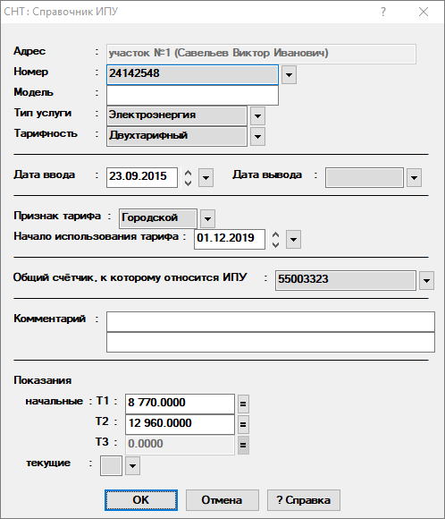
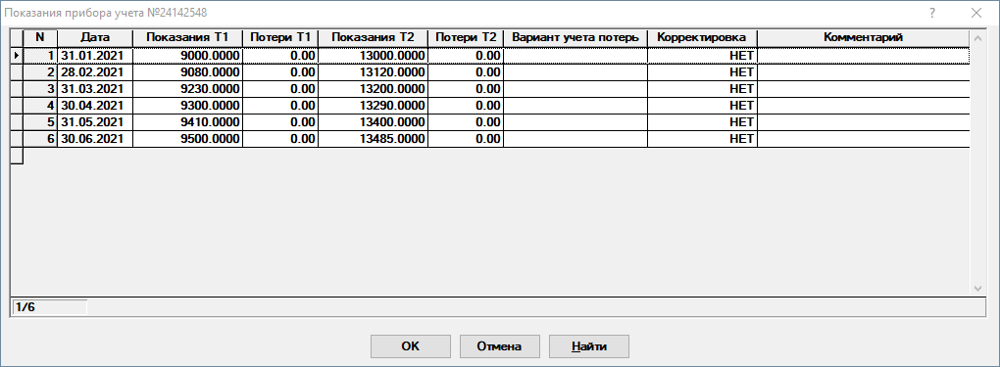

Справочник индивидуальных приборов учета (ИПУ)
В данном справочнике содержатся данные об индивидуальных приборах учета(ИПУ) .
При открытии отображается список ИПУ(рис. 1), в котором можно добавлять, удалять ИПУ, редактировать их номера и изменять привязку к участку.
 Рис. 1. Список ИПУ
Рис. 1. Список ИПУПосле выбора ИПУ отобразится заполненный диалог редактирования данных(рис. 2). Для сохранения внесённых данных необходимо нажать на кнопку ОК.

Рис. 2. Редактирование ИПУДля выбора нового ИПУ необходимо снова нажать на
 справа
от графы Номер. При этом, если внесённые изменения не были сохранены нажатием
на кнопку ОК, будет предложено сохранить их перед редактированием
нового ИПУ.
справа
от графы Номер. При этом, если внесённые изменения не были сохранены нажатием
на кнопку ОК, будет предложено сохранить их перед редактированием
нового ИПУ.
Рассмотрим поля, доступные для заполнения:
Адрес - поле закрыто для редактирования.
Номер - выбирается ИПУ из списка.
Модель - модель ИПУ.
Тип услуги - тип услуги ИПУ. Выбирается из списка.
Тарифность - указывается количество тарифных зон у ИПУ.
Дата ввода - дата ввода ИПУ в эксплуатацию. По умолчанию подставляется минимальная дата.
Дата вывода - дата вывода ИПУ из эксплуатации. Если дата вывода из эксплуатации не известна, то значение в этом поле менять не надо.
Признак тарифа - выбирается, по какому тарифу производить расчёт сумм начислений. Доступно два варианта - Стандарт, Сельский.
Будьте внимательны! Признак тарифа должен совпадать с признаком у соответствующего тарифа в справочнике взносов и тарифов. В противном случае возможен некорректный расчет.
Начало использования тарифа - указывается, с какой даты учитывать признак тарифа.
Общий счётчик, к которому относится ИПУ - указывается общий прибор учёта, к которому относится текущий ИПУ. Выбор производится из справочника общих приборов учёта.
Комментарий - комментарий к ИПУ. Не более 100 символов.
Показания - вводятся начальные и текущие показания ИПУ.
начальные - указываются начальные показания ИПУ для каждой тарифной зоны.
текущие - после нажатия на
 откроется таблица с показаниями ИПУ(рис.
3). В этой таблице можно добавлять, изменять и удалять показания.
откроется таблица с показаниями ИПУ(рис.
3). В этой таблице можно добавлять, изменять и удалять показания.
Рис. 3. Редактор показаний ИПУ
После заполнения полей необходимо нажать на кнопку ОК и внесенные изменения будут сохранены.